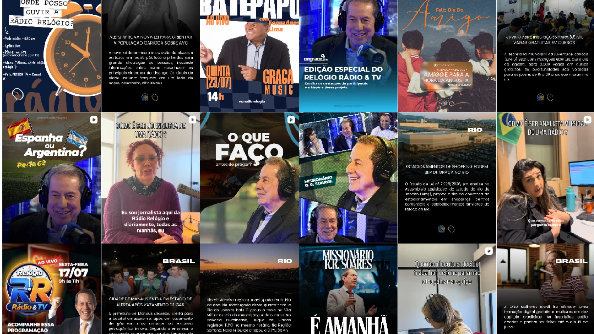
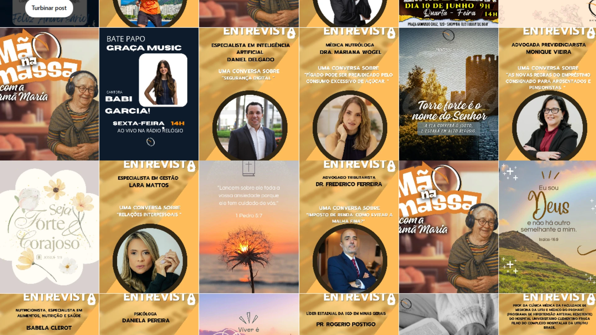
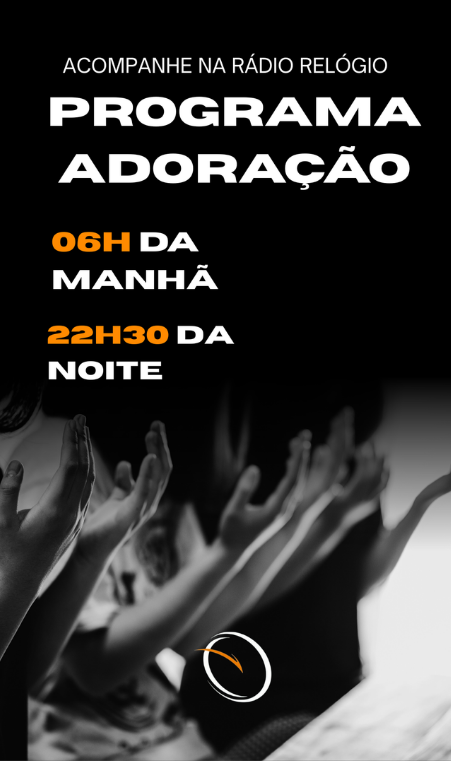
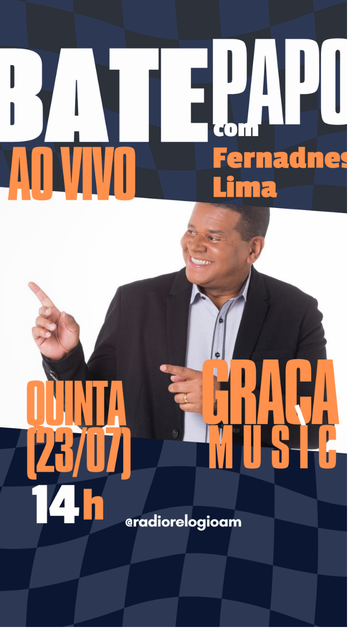

(01) CASE · ESTRATÉGIA DIGITAL
RÁDIO RELÓGIO
Reestruturação da estratégia digital de uma emissora de rádio: mais consistência, mais vídeo e mais bastidores, e um crescimento orgânico de 29× nas visualizações.
O DESAFIO
Ao assumir a comunicação da Rádio Relógio, vi a oportunidade de estruturar uma estratégia de conteúdo: deixar as publicações mais consistentes, ampliar a presença digital da emissora e aproximar o público da rotina da rádio.
o que eu fiz
radiorelogioamantes da estratégia
- 01
Calendário editorial
Organizei uma rotina de publicações para a página deixar de depender de posts soltos e ganhar constância.
- 02
Planejamento de conteúdo
Defini o que publicar e em qual formato, priorizando conteúdos recorrentes que o público reconhece.
- 03
Produção de Reels
Vídeos curtos viraram o centro da estratégia, por serem o formato com mais alcance orgânico.
- 04
Cobertura de bastidores
Mostrei a rotina da emissora e de quem faz a rádio, aproximando a audiência do dia a dia do estúdio.
- 05
Copywriting e publicação
Escrevi as legendas e chamadas e cuidei da publicação de cada conteúdo.
- 06
Análise de métricas
Acompanhei visualizações, alcance e interações para entender o que funcionava e ajustar a rota.
RESULTADOS
0visualizações no período em andamento
Interações
66×Alcance
3,9×Crescimento orgânico, sem investimento em mídia paga. O período em andamento vai até 24/07.
o feed, antes × depois
Arraste para comparar.


alguns posts


insights do projeto
Crescimento contínuo ao longo dos dois primeiros meses de gestão.
Estratégia baseada em conteúdo orgânico, sem investimento em mídia paga.
Diversificação dos formatos, priorizando vídeos curtos e conteúdos recorrentes.